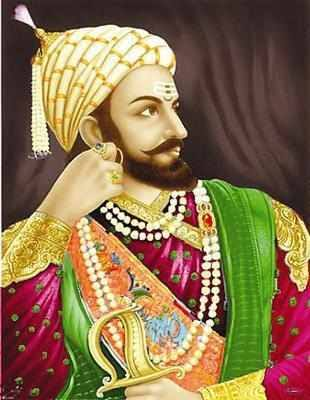

Chatrapati Shivaji Maharaj
(1630 - 1680)
One of the Greatest King Of 16th century
Chhatrapati Shivaji Maharaj was the founder of the Maratha empire a warrior king of Maharashtra. Chhatrapati Shivaji Maharaj was born in the Shivneri Fort in Maharashtra on 19 February 1630 to mother Jijabai and father Shahaji bhosale. It is said that mother Jijabai to goddess Shivai on Shivneri fort for a brave son and kept her son name as Chhatrapati Shivaji Maharaj.

The most well-known King Of Maratha Empire.